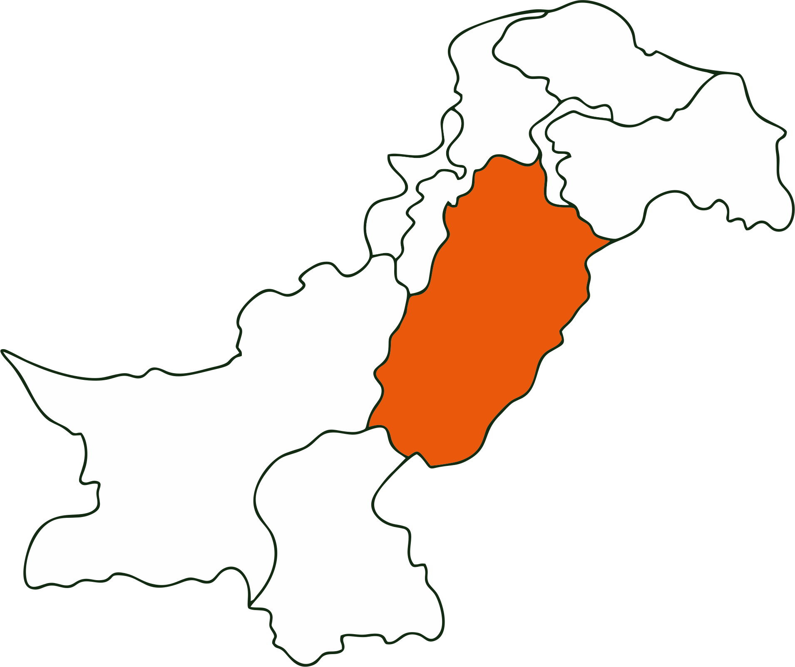

Provincial Flag

Government Emblem

Location

Overview
Heart of Pakistan
Punjab is the most populous province of Pakistan, housing over half of the country's population. Its name is derived from the Persian words Panj (Five) and Ab (Water), referring to the five tributaries of the Indus River: Jhelum, Chenab, Ravi, Sutlej, and Beas.
It is the agricultural breadbasket of the nation, known for its fertile alluvial plains, extensive irrigation network, and vibrant culture. Lahore, the provincial capital, is the historic cultural hub of the region.